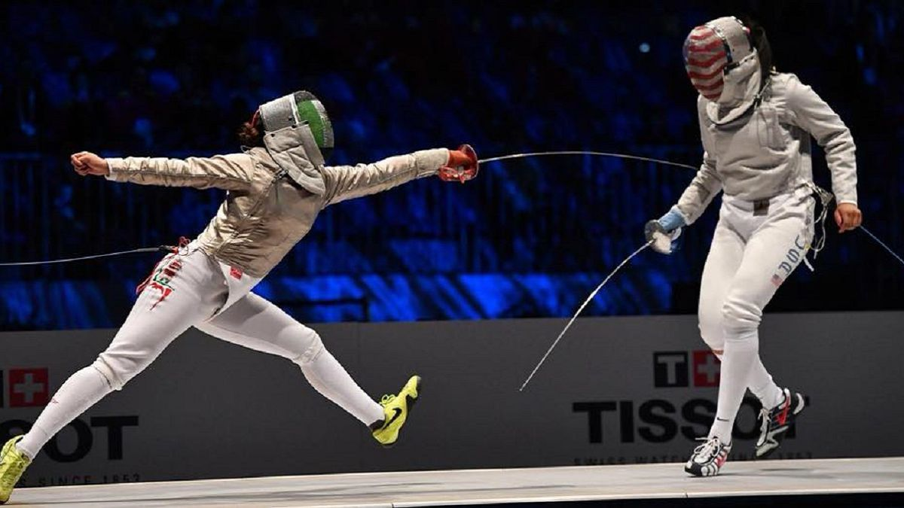
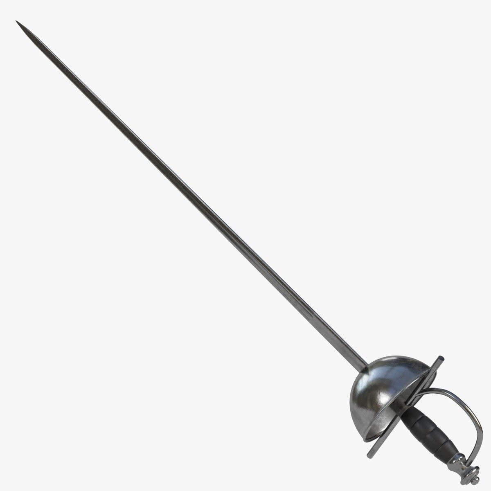
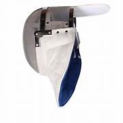
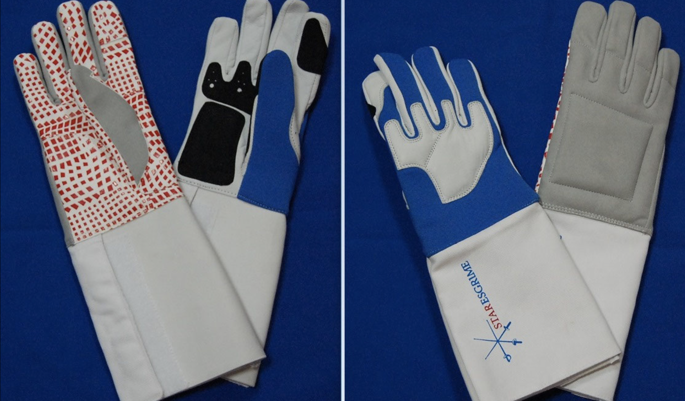

Sobre a Esgrima
A esgrima é um esporte de combate com armas brancas que inclui três disciplinas principais: florete, sabre e espadão.
História:
Desenvolveu-se a partir das técnicas de combate com espadas da Idade Média e Renascimento. Formalização: Tornou-se um esporte de competição no século XIX, especialmente na França. Atletas Famosos: Épée: Béatrice Huneau e Jean-François Diot são notáveis praticantes. Florete: Valentina Vezzali é uma das maiores esgrimistas da história. Campeonatos: Olimpíadas: A esgrima é parte dos Jogos Olímpicos desde a primeira edição moderna em 1896. Campeonato Mundial de Esgrima: Organizado pela Federação Internacional de Esgrima (FIE), com competições anuais.

Produtos Disponíveis

Nome do Produto: Espada de Esgrima
Preço: R$200,00
Descrição: Espada de esgrima de alta qualidade para competições.
Tamanhos Disponíveis: S, M, L

Nome do Produto: Capacete
Preço: R$400,00
Descrição: O capacete de esgrima é essencial para a segurança dos esgrimistas, combinando materiais robustos e acolchoamento para proteger a cabeça e o rosto. Seu design garante conforto e ajuste adequado, permitindo que o esgrimista se concentre na técnica e na competição com segurança.
Tamanhos Disponíveis: S, M, L

Nome do Produto: Luvas
Preço: R$150,00
Descrição: Aprimore sua performance na esgrima com nossa luva de esgrima de alta qualidade, projetada para proporcionar o máximo em proteção, conforto e agilidade. Ideal para esgrimistas de todos os níveis, esta luva combina tecnologia avançada com um design funcional para garantir uma experiência de treino e competição superior.
Tamanhos Disponíveis: S, M, L